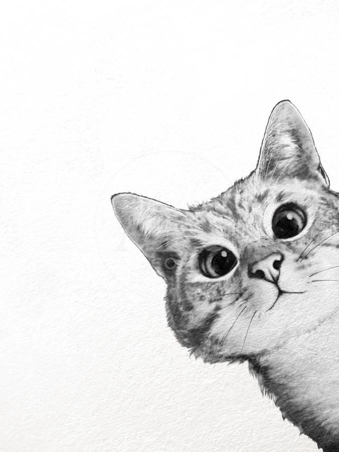

Grooming Techniques & Proper Bathing
Bathing
With their built-in grooming tools (teeth,tongue, and paws), your feline is well-equipped to tackle its own hair care needs. But if it is very dirty or gets into something sticky or smelly, you may need to give it a bath. Follow these steps to ensure less stress and most effective.
| * Pick a time that your cat is at its calmest (at naptime or bedtime) |
| * Brush your cat thoroughly first to remove as much as hair as possible (reduces hair in your drains) |
| * Place some cotton in their ears if possible to keep any water out |
| * Use a deep bathtub or outside if possible and use a spray nozzle. (Easier to rinse) |
Brushing Your Cat
Brushing your cat not only removes dirt, grease and dead hair from it's coat, but it helps to remove skin flakes and stimulates blood circulation, improving the overall condition of it's skin. One or two brushings per week will help your kitty to keep a healthy coat and you’ll find that regular sessions are especially beneficial when your cat ages and is no longer able to groom so meticulously on her own.
| * For short-haired cats: With a metal comb, work the brush through your cat’s fur from head to tail to remove dirt and debris. Work along the lie of her fur, brushing in the direction the coat grows. Brush all over it's body, including her chest and abdomen, concentrating on one section at a time to remove dead hair and tangles. A rubber brush can be especially effective for removing dead hair on cats with short fur. |
| * For long-haired cats: Long-haired cats who live indoors shed throughout the year and need grooming sessions every few days to remove dead hair and prevent tangles. Start with their abdomen and legs, gently combing the fur upward toward her head. Comb the neck fur upward, toward their chin. Make a part down the middle of her tail and gently brush out the fur on either side. You can sprinkle talcum powder over knots and gently use your fingers to tease them apart. If the knots don’t come out by hand, try using a mat-splitter. |